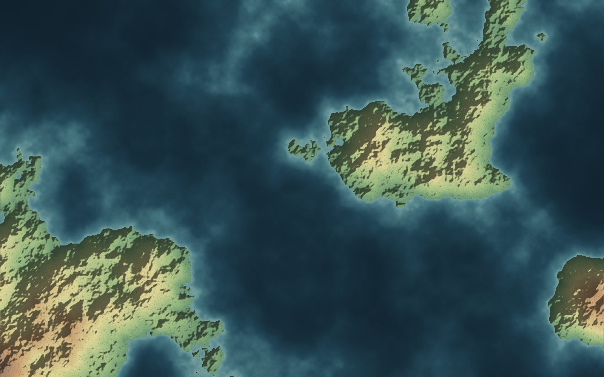
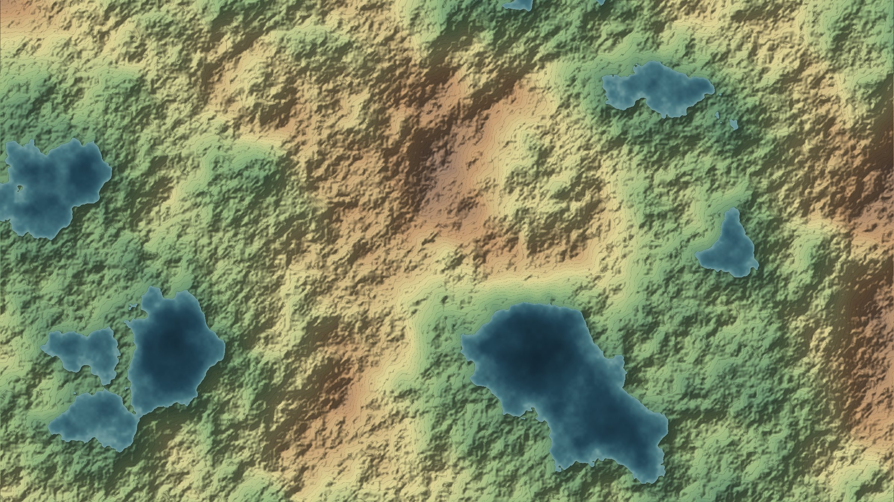
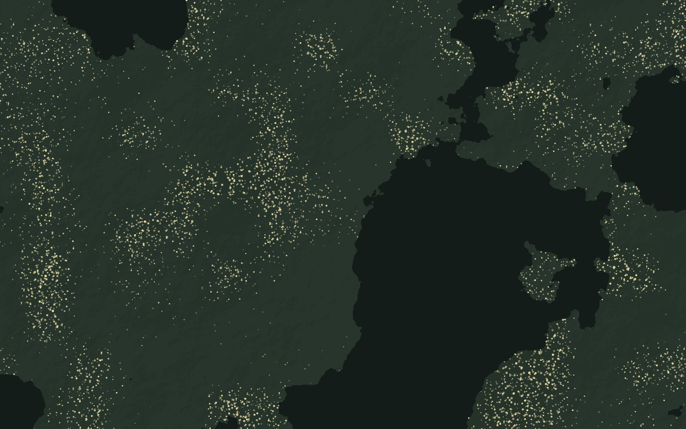
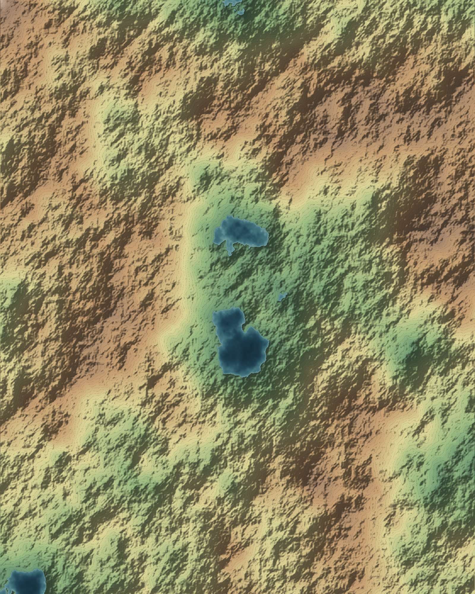
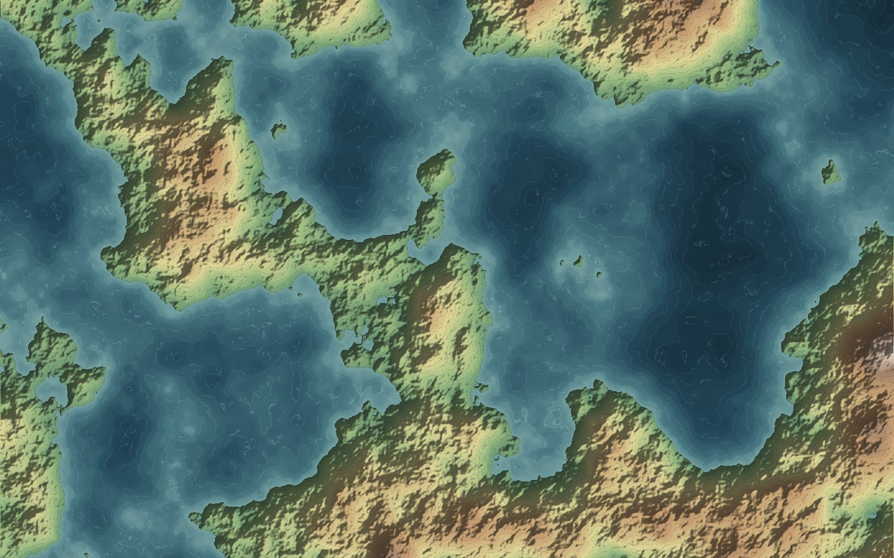
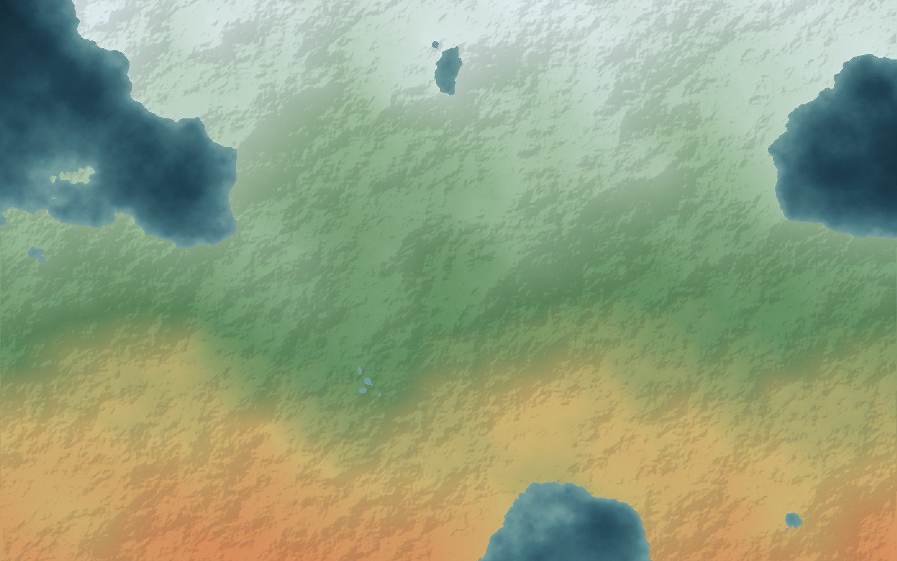
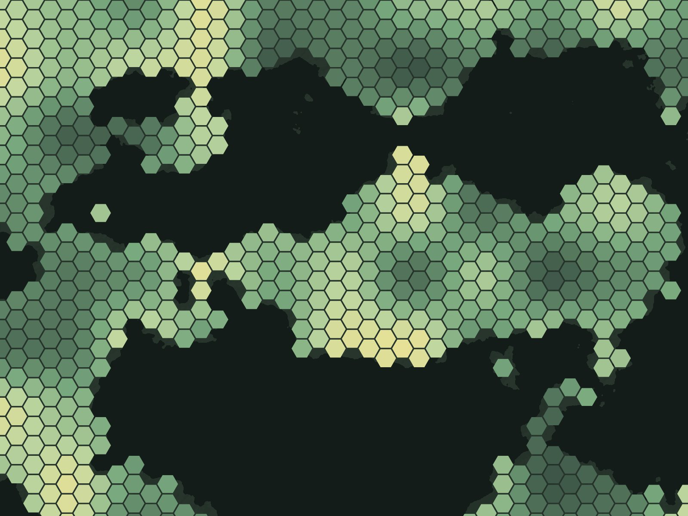
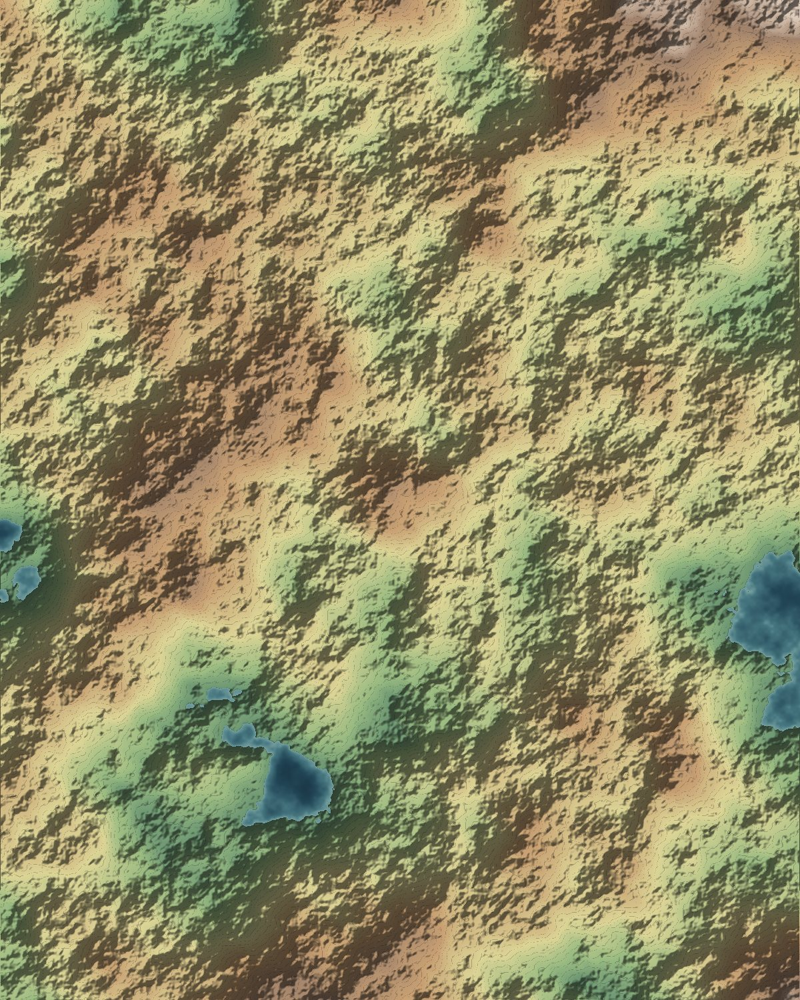

De Dagkrant28 oktober 2026
Kustonderhoud: meer zand nodig dan gedacht
De zeespiegel stijgt sneller dan in eerdere berekeningen. Daardoor moet er jaarlijks meer zand voor de kust worden gespoten.
Lees bij de bron
Lesmateriaal, kaarten en actueel nieuws voor elk leerjaar. Kies je klas en je staat meteen bij de goede paragraaf.
Kies je leerjaar

Voor leerlingen, collega’s en iedereen die nieuwsgierig is. Geen account nodig.
Dit is het lokaal waar je alles terugvindt wat we in de les gebruiken: de presentaties, de werkbladen, de kaarten en de nieuwsberichten waar we het over hadden. Elk hoofdstuk staat op één pagina, paragraaf onder paragraaf, zodat je kunt teruglezen wat je gemist hebt of vooruit kunt kijken naar wat komt. Bij elk onderwerp staat wat er nu in het nieuws is, want aardrijkskunde gebeurt niet alleen in het boek.

Reliëf en hoogtelijnenFysische geografie
ZeediepteWater
KlimaatzonesKlimaat
Duurzame energieEconomieElke kaart opent groot, met inzoomen en schermvullende weergave, en staat ook in de hoofdstukken waar hij bij hoort.

De Dagkrant28 oktober 2026
De zeespiegel stijgt sneller dan in eerdere berekeningen. Daardoor moet er jaarlijks meer zand voor de kust worden gespoten.
Geo Weekblad24 oktober 2026
Het nieuwe park ligt verder uit de kust dan de vorige. Wat betekent dat voor de aanleg van kabels en voor de visserij?
Stadsjournaal19 oktober 2026
Steden als Zwolle en Amersfoort trekken jonge gezinnen die in de grote steden geen huis vinden.

De Dagkrant14 oktober 2026
Schepen varen half beladen door de lage waterstand bij Lobith. Hoe hangt dat samen met smeltwater uit de Alpen?
Wetenschapsbericht9 oktober 2026
Met satellietmetingen is per straat te zien hoeveel de grond daalt. In veengebieden gaat het om centimeters per jaar.
Provincies, steden en rivieren aanwijzen op de kaart. Je ziet meteen wat goed is en oefent alleen wat je nog niet kent.
StartJe ziet een stad van bovenaf, zonder namen. Aan de rivier, de haven en de vorm van de wijken raad je welke stad het is.
StartBouw zelf een stad over vijftig jaar. Waar komen wegen, wijken en parken, en wat gebeurt er met het verkeer als je niets plant?
StartVul twaalf maanden temperatuur en neerslag in en zie het diagram ontstaan. Vergelijk daarna met een plaats aan de andere kant van de wereld.
Start